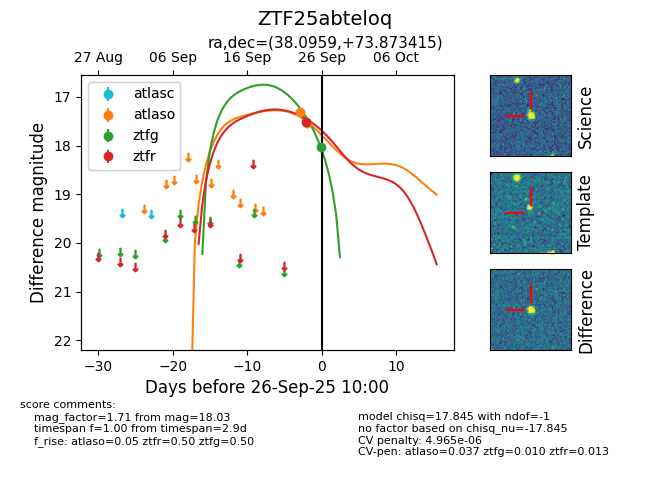
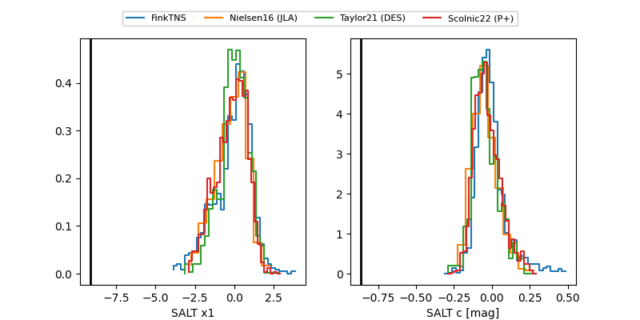

FINK: ZTF25abteloq
Lasair: ZTF25abteloq
ALeRCE: ZTF25abteloq
ZTF25abteloq (ztf,fink)
equatorial (ra, dec) = (38.0959,+73.87342)
galactic (l, b) = (129.8959,+12.38219)


last atlaso=17.54, ztfg=18.03, ztfr=17.52
2 atlaso, 1 ztfg, 1 ztfr detections